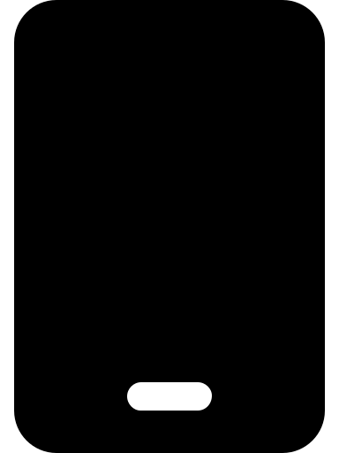
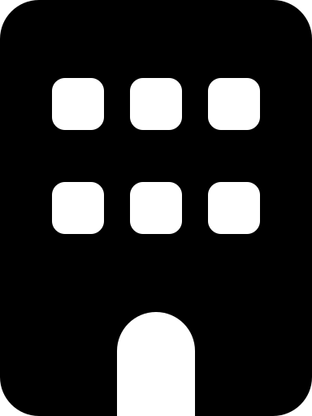

Jivnesh Sandhan
Assistant Professor
Dept. of Intelligence Science and Technology
Program: Large Language Model Center
Kyoto University, Japan.
Prospective Students: Please refer Contact Me page.

Languge Media Processing Lab

Office address : Building 9: S212
Research interest :
- LLM Psychometrics and Jailbreaking
- AI for Social Good
- Animal Language Modeling
- Representation Learning
- Sanskrit Computational Linguistics
- Low-resource Multi-lingual NLP
Experience :
- Assistant Professor, Kyoto University, Japan, (2026~Present) (QS World Ranking: 57)
- Dept. of Intelligence Science and Technology
- Program: Large Language Model center
- Duties: Teaching, research and mentoring post-graduate students.
- Postdoc Researcher, Kyoto University, Japan, (2024~2026) (QS World Ranking: 57)
- Dept. of Intelligence Science and Technology
- PI: Prof. Yugo Murawaki
- Research Area: LLM Psychometrics, LLM Jailbreaking and Interpretability
- Publications at postdoc: PHISH (EACL26), CAPE (EMNLP25), Mahānāma (EMNLP25), ANVAYA (AACL25)
- Visiting Assistant Professor, IIT Dharwad, India (2023~2024)
- Dept. of Computer Science, Excellent Teaching Feedback
- Courses Taught: Computer Programming, Artificial Intelligence and Indian Knowledge System
- Research Area: Image Caption Evaluation, Cultural Linguistics, Low-resource Multi-lingual NLP
- Publications at IITDh: TAGSIM (ICIP25), CSSL (EMNLP24) and DepNeCTI (EMNLP23)
Education :
- Ph.D., Electrical Engineering, IIT Kanpur, India, 2023
- MS Degree, Mathematics and Scientific Computing, IIT Kanpur, India, 2018
- B.Tech Degree, Mathematics and Scientific Computing, IIT Kanpur, India, 2017
Brief Bio :
Dr. Jivnesh Sandhan is an assistant professor at the department of Intelligence Science and Technology, Kyoto University. Prior to this, he served as a visiting assistant professor in the dept. of Computer Science at IIT Dharwad. He earned his Ph.D. at IIT Kanpur in 2023, following a dual degree (B.Tech-M.Tech) from the same institute in 2018. He has published 18 papers, including 10 publications at top-tier A*/A (7 first-authored) venues such as ACL, EMNLP, EACL and AACL. His current research primarily focuses on computational psychometrics, LLM jailbreaking and Sanskrit computational linguistics. He has contributed extensive academic service as an area chair for ARR at ACL 2026, EMNLP 2025, AACL 2025 and EACL 2026, and as a program committee member for BMCC 2026, ISCLS 2026, WSC 2025, and BHASHA-AACL 2025. His research contributions have been recognized with the Outstanding Area Chair Award and a Best Resource Paper Award finalist distinction at EMNLP 2025, the Best Poster Award at IndoML 2022.
News:
- May 1st, 2026: I have started my new position as an assistant professor at Kyoto University.
- January 4th, 2026: Our PHISH paper got accepted into EACL26 (Findings).
- November 16th, 2025:: I will be serving as program committee member for ISCLS26.
- November 4th, 2025: I received the Outstanding Area Chair Award at EMNLP 2025.
- October 26th, 2025: Our ANVAYA paper got accepted into AACL-IJCNLP25 (mains).
- September 17th, 2025: Our Mahānāma paper got nominated for the Best Resource Paper Award at EMNLP25.
- August 21st, 2025: Our 2 papers (Mahānāma and CAPE) got accepted into EMNLP25.
- July 30th, 2025: I will be serving as a Area Chair for AACL25 (ARR25: July cycle).
- July 20th, 2025: Program committee member for AACL25 (BHASHA workshop).
- June 25th, 2025: I will be serving as a Area Chair for EMNLP25 (ARR25: May cycle).
- May 21st, 2025: Our TAGSIM paper got accepted in ICIP25.
- March 16th, 2025: Our work on Sanskrit poetry got accepted in WSC25.
- January 1st, 2025: I will be serving as programme committee member for WSC25.
- December 2nd, 2024: I joined as a postdoc at Kyoto University.
- September 20th, 2024: Our CSSL paper got accepted in EMNLP24 main track.
- October 31th, 2023: I joined as a visiting assistant professor at IIT Dharwad.
- October 8th, 2023: Our paper, DepNeCTI got accepted in EMNLP'23 (Findings).
- August 16th, 2023: I defended my Ph.D. thesis.
- May 8th, 2023: Our paper, SanskritShala got accepted in ACL'23 (System Demonstrations).
- December 17th, 2022: I received the Best Poster Award at IndoML22.